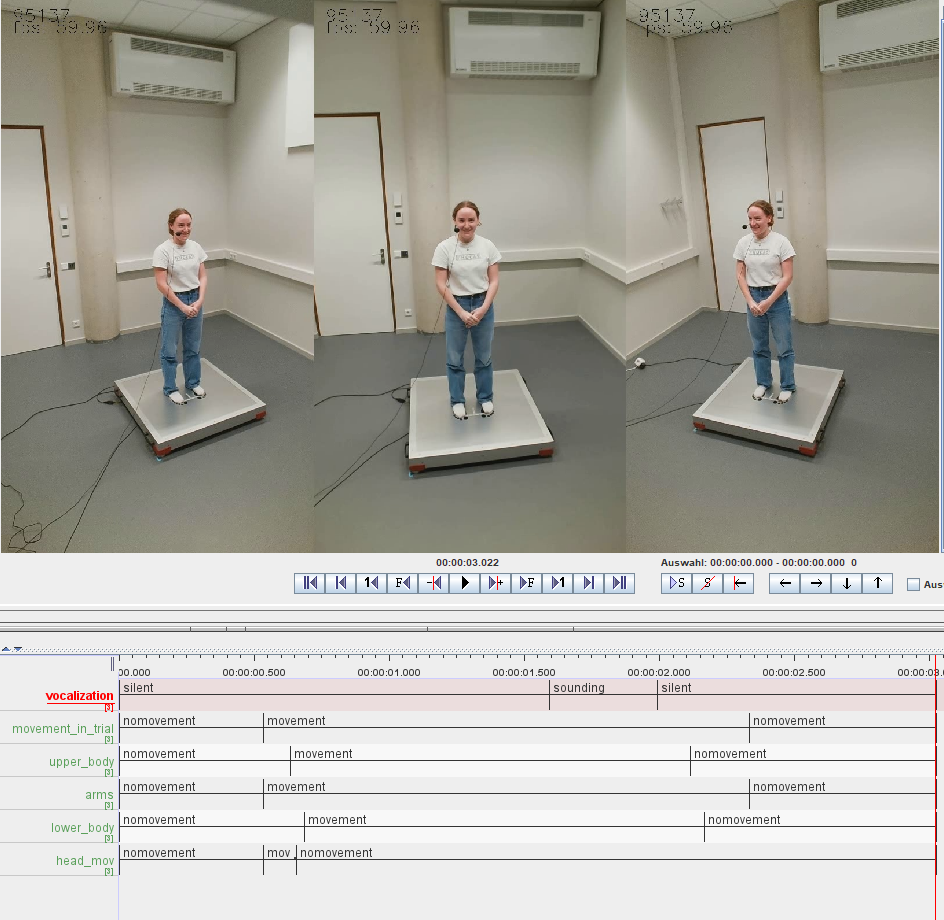
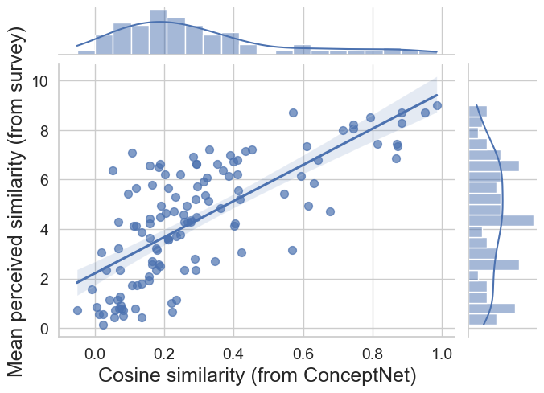

| comparison | tier | linked_units | raw_agreement | kappa | |
|---|---|---|---|---|---|
| 0 | R1_Auto | arms_60 | 0.81 | 0.81 | 0.65 |
| 0 | R1_Auto | arms_80 | 0.81 | 0.81 | 0.64 |
| 0 | R1_Auto | head_60 | 0.60 | 0.56 | 0.32 |
| 0 | R1_Auto | head_80 | 0.63 | 0.58 | 0.34 |
| 0 | R1_Auto | lower_60 | 0.80 | 0.79 | 0.59 |
| 0 | R1_Auto | lower_80 | 0.75 | 0.73 | 0.50 |
| 0 | R1_Auto | upper_60 | 0.67 | 0.66 | 0.44 |
| 0 | R1_Auto | upper_80 | 0.67 | 0.67 | 0.43 |
| 0 | R3_Auto | arms_60 | 0.75 | 0.75 | 0.58 |
| 0 | R3_Auto | arms_80 | 0.73 | 0.72 | 0.53 |
| 0 | R3_Auto | head_60 | 0.62 | 0.60 | 0.39 |
| 0 | R3_Auto | head_80 | 0.64 | 0.61 | 0.39 |
| 0 | R3_Auto | lower_60 | 0.66 | 0.64 | 0.38 |
| 0 | R3_Auto | lower_80 | 0.70 | 0.68 | 0.41 |
| 0 | R3_Auto | upper_60 | 0.67 | 0.66 | 0.44 |
| 0 | R3_Auto | upper_80 | 0.63 | 0.61 | 0.37 |
| 0 | R1_R3 | arms | 0.85 | 0.84 | 0.70 |
| 0 | R1_R3 | head | 0.67 | 0.62 | 0.38 |
| 0 | R1_R3 | lower | 0.74 | 0.71 | 0.46 |
| 0 | R1_R3 | upper | 0.70 | 0.68 | 0.44 |
Overview of Methodology
Here we lay out the conceptual overview of the methods we use to collect, process and analyze the data. The methods are preregistered at OSF Registries. Where applicable, we refer to the concrete code executing the steps described.
Experimental setup and procedure
Procedure
This experiment consists of two parts (see method preregistration), separated by a short break. In both parts, participants form dyads and alternate between the roles of performer and guesser. The performer expresses a concept, while the guesser attempts to identify it. This study focuses on Part 2, where both participants see whether the guesser’s answer was correct. Additionally, the performer sees the exact response and has an opportunity to repair her original performance. Each participant performs novel expressions of 21 concepts, totaling 42 concepts per dyad, across three within-subject Modality conditions: vocal, gesture, and combined. The order of Modality conditions is randomized, and each is introduced with instructions, followed by two practice concepts and seven trials.
After each performance, the guesser types their answer. If correct, they proceed to the next concept. If incorrect, both see the incorrect response, and the performer repeats the concept while the guesser makes another attempt. Up to two repair attempts are allowed before moving on. Correctness is judged by the experimenter, who checks only for typos; synonyms are not accepted to ensure consistency across sessions. Participants switch roles within and between conditions.
Stimuli
The stimuli were selected from a list of 206 concepts. This list included 100 Leipzig-Jakarta List concepts (Tadmor, Haspelmath, and Taylor 2010) and 100 concepts varying in sensory expressibility (Lynott and Connell 2009; Lynott et al. 2020). In a previous experiment - similar to Kadavá et al. (2024) -, 227 native Dutch participants rated the current concepts on a continuous scale for how well they could be communicated without language across three modalities: gesture, vocal, and combined.
From the 206-item list, we excluded concepts with any expressibility value below a threshold (mean minus one standard deviation) to avoid low-expressible concepts. Using a custom Python script, we constructed three modality-specific 28-item lists of top-ranked expressible concepts, ensuring no overlaps between them. Body-related concepts (e.g., ‘tooth,’ ‘ear,’ ‘tongue’) were excluded to prevent indexical resolution and replaced with taste-related concepts of generally low expressibility, aligning with secondary research interests.
The final 84-item list maintains expressibility statistics comparable to the original list. Each participant performs seven concepts per modality condition. Stimuli lists were pre-randomized and controlled for balanced occurrences across sessions (each concept appears at least 10 times, or 12 if additional dyads are included). Finally, each list was again checked for mean expressibility values to prevent clustering of low-expressible concepts.
Lab equipment
Motion Tracking & Video Recording: The recording setup consists of three Elgato Facecam cameras on a movable arch that record at 60 fps with a 1/200s shutter speed to reduce motion blur (ISO 354). A custom Python script (using OpenCV and ffmpegcv) captures and writes videos (Kadavá, Snelders, and Pouw 2024). A fourth Logitech webcam (1960x1080, 60 fps) records a high-quality frontal view for general observation.
Balance Board: Designed by the Donders Institute, it incorporates modified Wii Balance Board sensors, synchronized to 1 ms temporal and submillimeter spatial accuracy. Data is collected at 400 Hz via a National Instruments USB-62221 A/D card.
Audio Recording: A C520 head-mounted condenser mic records via a DAP PRE-202 amplifier (gain: 25%). The signal is split: 16 kHz LSL stream is recorded via a Linux-based Minux system and 48 kHz via another PC (using Audacity). The 48 kHz signal is used for acoustic feature extraction. A second split feeds Sony WH-1000XM5 noise-canceling headphones to ensure that the guesser hears the performer clearly despite the separating curtain.
One-Way Screen: One-way screen that has been designed by the Technical Support Group at the Max Planck Institute for Psycholinguistics, similar to Trujillo et al. (2021). It serves to minimize nonverbal feedback while maintaining co-presence.
Experiment Software: The experiment runs via a custom Python script (PsychoPy, RuSocSci), controlling a buttonbox and logging trial accuracy in CSV format.
Data Synchronization: LabStreamLayer (LSL) synchronizes the microphone, cameras, balance board, and buttonbox markers (e.g., role changes, trial start). Data is stored in XDF format.
Concrete specifics for all equipment can be found in the method preregistration.
Data processing
In this preregistration, we preregister processing and analysis pipeline that has been developed using the pilot data which we call dyad 0. The actual data is not disclosed before preregistering.
Processing XDF file to trial-sized data streams
Each session resulted in one XDF file containing all recorded streams (i.e., video frame stream, balance board stream, audio stream), which was read and processed via custom Python scripts.
To cut the stream-specific post-processed (e.g., smoothed) time series into trials, we used the buttonbox timestamps to isolate trial segments in each stream. Since the buttonbox timestamps correspond with inputs to our PsychoPy experiment script, we were able to automatically retrieve metadata for each trial segment (e.g., condition, participant number, etc.).
The audio stream was converted into a sound file. The video frame stream is matched with the recorded video by the range of frames of each trial and cut accordingly. However, since the buttonbox events are administered manually by the experimenter, video trials need to be visually inspected and, if needed, adjusted to correct for late starts or early ends.
Lastly, we align the externally recorded 48 kHz audio to the 16 kHz audio, which is synchronized to the rest of the LSL data using cross-correlation and then cut again to the individual trials (Nalbantoğlu and Kadavá 2025). By doing that, we can use the high-quality audio for further analysis, while still having all streams synchronized.
Go to script: Pre-Processing I: from XDF to raw files
Motion tracking
OpenPose
First, we cut each trial video into three individual videos per camera. Each video is then processed with motion capture using OpenPose (Cao et al. 2019). Using the 135 marker model, we obtain a skeleton with 135 body keypoints, including hands and face, with a sampling rate of 60 Hz.
Go to script: Motion tracking I: Preparation of videos
Go to script: Motion tracking II: 2D pose estimation via OpenPose
Pose2sim
OpenPose retrieves 2D skeleton data for each camera. To transfer multiple 2D data streams to 3D position data we use a method called triangulation based on calibrated cameras. Triangulation is performed using Pose2sim (Pagnon, Domalain, and Reveret 2022). To be able to triangulate all 2D skeleton data, we first calibrate the cameras based on intrinsic and extrinsic angles with a checkerboard, with which short recordings were made for each session. For intrinsic calibration, we obtain an error of 0.24 pixels for each camera (recommended below 0.5 pixels). Residual calibration errors for dyad 0 are 1.8, 1.5, and 1.9 cm for each camera, respectively. The mean reprojection error for all points on all frames across all trials of dyad 0 is 1.2 cm (below 1 cm recommended, but acceptable until 2.5 cm). The triangulated data are directly smoothed with a built-in function by 4th-order, 10Hz low-pass, zero-phase Butterworth filter.
Go to script: Motion tracking III: Triangulation via Pose2sim
OpenSim
To obtain inverse kinematics and dynamics, we use the OpenSim package (Seth et al. 2018). First, we scale the 135 model using the static T-pose of a participant and information about their body mass (i.e., height and weight) to create a body model for each individual. The weights are kept at the default values for this model. The scaled model is then used to calculate joint angles for each trial (represented by the coordinates obtained in the previous step). Joint angles are then used to obtain joint moments/torques. To prevent amplification of noise in solving inverse dynamics, we first smooth the joint-angle data using a Savitzky-Golay 3rd-order polynomial filter with a span of 560 ms.
During motion feature extraction, we keep the sampling rate of all motion data at the original values (i.e., 60 Hz), upsampling to 500 Hz only at a later stage when merging all multimodal signals.
Go to script: Motion tracking IV: Modeling inverse kinematics and dynamics
Extraction of acoustic features
We use the high-sampling 48 kHz audio data to extract acoustic features. These include fundamental frequency, amplitude envelope, voice quality measurements, and formants.
To extract the amplitude envelope of the acoustic signal, we follow a method by Tilsen and Arvaniti (2013), implemented in Python by Pouw (2024). We use a bandpass and 2nd-order, 10Hz low-pass, zero-phase Butterworth filter.
Fundamental frequency was extracted using the Python package parselmouth (Jadoul, Thompson, and de Boer 2018). Based on sex, the F0 range was limited to 186-381 Hz (female) or 75-300 Hz (male). The resulting f0 contours were smoothed with a Savitzky-Golay 3rd-order polynomial filter with a span of 50 ms applied to continuous runs of phonated speech to maintain discontinuities typical of the f0 signal.
To account for the spectral properties of the acoustic signal, we calculated the center of gravity using Python package parselmouth, filtering out the fundamental frequency using a notch filter.
Formants were extracted in Praat (Boersma and Weenink 2025), using Chris Carignan’s optimization method (see Github). To increase the reliability, we have kept formants only in those formant segments that contain fundamental frequency or happen within a peak of a vocalic energy amplitude..
Note that we keep the sampling rate of all acoustic feature time series data at the original values. We do, however, downsample all of them to 500 Hz at a later stage when merging all signals into a single dataframe per trial.
Derivatives and aggregation of all data
Kinematics
Coordinates from 3D skeleton data were interpolated and smoothed with a Savitzky-Golay 3rd-polynomial filter with a span of 400 ms for positional data of upper-body keypoints, and with a 1st-polynomial filter with a span of ca. 800 ms for positional data of lower-body keypoints. The difference in filter settings was chosen after inspection of the video data alongside the coordinates. This revealed more severe error measurement on the lower-body keypoints, mainly due to their occlusion by clothes. Additionally, as lower body key points tend to stay relatively motionless, they are more prone to noise. We then differentiate all signals with respect to time to retrieve the 3D speed (in cm/s), 2D vertical velocity (cm/s), 3D acceleration (cm/s^2), and 3D jerk (cm/s^3). The derivatives are further smoothed with a Savitzky-Golay 3rd-order polynomial filter with a span of 400 ms.
To create aggregated groups of derivatives for body segments (e.g., speed of whole arm), we compute an Euclidean sum over a derivative of all key points belonging to a group.
Inverse kinematics and dynamics
Joint angle data and moment data were smoothed with a Savitzky-Golay 1st-order polynomial filter with a span of 560 ms. Further, we obtained derivatives of the joint angular data, namely joint angle speed (in rad/s), joint angle acceleration (in rad/s^2), joint angle jerk (in rad/s^3), and moment change (in Nm/s). We smoothed all derivatives with a Savitzky-Golay 1st-order polynomial filter with a span of 560 ms. Similar to the kinematic measures, we have created aggregated measures for the same groups of keypoints.
Balance
We computed the change in 2D magnitude in the center of pressure and smoothed it using the Savitzky-Golay 5th-order polynomial filter with a span of 102 ms.
Go to script: Processing I: Motion tracking and balance
Acoustics
We differentiated the amplitude envelope of the acoustic signal to obtain the first derivative, the change in amplitude.
Go to script: Processing II: Acoustics
Merging & resampling
All time series were merged on a common sampling rate of 500 Hz.
Go to script: Processing III: Merging multimodal data
Movement annotation
Manual annotation
For this pre-registration, all trial-sized videos of dyad 0 were annotated for communicative movement in ELAN (Wittenburg et al. 2006) by two human annotators. A common annotation scheme consists of four tiers for arms, upper body, lower body, and head. A fifth parent tier concatenates all movement in the trial from the beginning to the end.
We define communicative movement as any gesture that can be attributed to the performance. Because participants were asked to signal the start and end of their performance with locked hands in front of their body, the communicative movement usually starts when people’s arms depart from this position (or other idiosyncratic resting positions) and when they return to it once again. If locking of the hands was missing, the annotators were asked to annotate the start of the movement as a moment where any body part initiates a communicative movement (i.e., when a body part leaves resting position). Similarly, the end of a movement would be signalled by retraction to a resting position.

Training a movement classifier
Since the whole dataset contains over 8,000 trials, we have decided to use the manual annotations created for dyad 0 (and further extended, see below) to train a classifier that can automatically annotate a timeseries into movement and no movement. For that, we have created a training dataset containing summarizing features – namely mean, standard deviation, minimum, and maximum – of all movement timeseries in our data (i.e., kinematics, joint angles, moments) and some extra relational features such as the distance between finger indices, distance between a hip and a wrist, distance between a head and a hip an distance between head and an ankle. We fitted four logistic regression models, one for each tier (i.e., arms, upper body, head, lower body), with ground truth values represented by manual annotators. Seventy-five percent of the data was used for training, twenty-five percent for testing. The accuracy on test sets for arm, head, upper body and lower body movement is 0.96, 0.86, 0.86, and 0.89, respectively.
Four classifiers were then used to annotate pre-processed trial timeseries that were summarized into 100 ms chunks with a 25 ms sliding window. Together with the predicted value, we obtained the confidence of the model (i.e., confidence in giving a correct label of movement). Finally, we smoothed the confidence and averaged over the overlapping segments. A threshold of 60% confidence was set as the border between the movement and no movement labels.
To avoid event flickering in the classifications, we have further cleaned the annotations following two rules: 1) if there is a no movement segment between two movement segments that is shorter than 200 ms, it is changed into movement; 2) if there is a movement segment between two no movement segments that is shorter than 200 ms, it is changed into movement. Finally, everything from the first movement to the last movement within a tier was annotated as one movement unit, as we are interested in the whole, holistic movement behavior rather than its segments.
Go to script: Movement annotation I: Preparing training data and data for classifier
Go to script: Movement annotation II: Training movement classifier, and annotating timeseries data
Interrater agreement
Reliability for overlap in identifying the same time events (movement versus no movement) was calculated using EasyDIAG (Holle and Rein 2015) between human annotators and annotation models. Table 1 provides a summary of the interrater agreement between manual annotators R1 and R3 and between manual annotator R1 and the model.
The current model reaches substantial agreement - as defined by Landis and Koch (1977) - with a human annotator only for arms. To improve its predictions for head, upper body, and lower body, and to avoid the risk of overfitting the model on a specific type of behaviour generated by individuals in dyad 0, we will extend the training data by annotating 10% of behaviour per participant per dyad before the final analysis. If kappa does not result in minimum substantial agreement (k = 0.61), we will annotate a larger portion of the data. However, note that we are mainly interested in upper limb movement, hence, potential difficulties with automatic annotations of the remaining body parts can be partially ignored, while acknowledging the limitations in our analysis.
Go to script: Movement annotation III: Computing interrater agreement between manual and automatic annotation
Sound annotation
All sound files were automatically annotated for sound/silence annotation using Praat. These annotations were manually inspected and corrected where necessary. Similarly to movement annotation, we aim to construct an automatic annotation tool that can detect the onset and the offset of a sound. We will use a similar pipeline with acoustic features. We will consider the model successful if the agreement between (manually corrected) Praat annotations and automatic annotation tool results in a minimum substantial agreement (k = 0.61).
Final merge
At last, all movement and sound annotations were merged with the aggregated acoustic-kinematic data.
Go to script: Final merge
Concept similarity
For each target-answer pair from the experiment, we have computed cosine similarity using the Dutch word embeddings in numberbatch version 19.08 from ConceptNet (Speer, Chin, and Havasi 2018). To validate this measure as a proxy of conceptual similarity, we have collected data from 14 Dutch-native people who were asked to rate the same pairs of words in an online study in terms of how similar they felt, and compare the rated and computed (cosine) similarity. Pearson’s r coefficient of .73 reveals a strong positive correlation.
{kind=link}

Note that some answers for dyad 0 are not represented in the embeddings (e.g., two-word answers), and, therefore, we are not able to compute cosine similarity for a number of target-answer pairs. Since this is also expected for the actual data, we will use the identical rating study to collect the missing similarity values.
Go to script: Computing concept similarity using ConceptNet word embeddings
Feature dataset
For the analysis, we constructed a dataset compiling effort-related features summarized from the trial-segmented timeseries. Before that, we have z-scored each timeseries by participant. This is to conceptualize effort as a relative measure rather than absolute and account for different uses of movement/vocalization ranges.
Top-down analysis features
To answer our two main research questions, we collect features related to change in center of pressure (COPc), arm torque change, and amplitude envelope. To investigate the cumulative dimension of effort, we collect integrals of the three time series for each trial. For an instantaneous dimension of effort, we collect the average peak value of each signal per trial. Note that these sets of measures correlate weakly or not at all (r < .3).
Bottom-up analysis features
We further utilize an extended list of time-varying signals related to our exploratory analysis of other potential measures of effort. These signals include:
- 3D kinematics of arms, legs, and head (positions, speed, acceleration, jerk)
- Joint angle kinematics of arms, legs, and head (positions, velocity)
- Joint angle dynamics of arms, legs, and head (torque, torque change)
- Power of arms, legs, head (angular velocity × torque)
- Spectral center of gravity
- Fundamental frequency
- The first three formants, F1-F3, and their rate of change (i.e., velocity)
- Change in amplitude envelope
- Centre of pressure and its change
For each time-varying signal in our dataset relating to acoustics, kinematics, and joint dynamics, we extract a number of statistics that characterize the global, local (instantaneous), and cumulative nature of the signal in terms of effort. These are:
- Global mean and standard deviation
- Amount of peaks, and their mean value and standard deviation
- Range of values
- Integral
Further, we utilize measurements that characterize the trials beyond these statistics. These include:
- Intermittency (as dimensionless jerk), used in Pouw et al. (2021);
- Bounding box of movement volume (i.e., gesture space), used in Żywiczyński et al. (2024);
- Vowel space area (VSA), used in Berisha et al. (2014);
- Motor complexity (computed as the slope of PCA), similar to Yan et al. (2020);
- Number of submovements, used in Pouw et al. (2021); Trujillo et al. (2018);
- Number of moving articulators
- Coupling and movement symmetry of two arms (computed as a correlation between both arms’ trajectories, and as a difference in distance traveled by every joint of each arm), similar to Xiong, Quek, and Mcneill (2002).
Go to script: Extraction of effort-related features
Data analysis
Top-down analysis (confirmatory)
All statistics were performed using R (Team 2016). We will fit Bayesian mixed effects models, using the brms R-package (Bürkner 2017), to test two hypotheses:
H1: Correction recruits more physical effort than the baseline performance.
H2: A higher degree of misunderstanding will require a performer to engage in more effortful correction.
For H1, we will fit six models for the investigated dependent variables: 1) arm torque integral, 2) envelope integral, 3) COPc integral, 4) arm torque peak mean, 5) envelope peak mean, 6) COPc peak mean. All models will include communicative attempt, familiarity (between a guesser and a performer), personality traits of a performer (measured with BFI), expressibility of a concept, modality, and trial number as predictors. All models will include varying slopes and intercepts for participant and concept. The models will include weakly informative priors (i.e., unbiased with respect to H0/H1).
For H2, we will fit six models for the investigated dependent variables: 1) change in arm torque integral, 2) change in envelope integral, 3) change in COPc integral, 4) change in arm torque peak mean, 5) change in envelope peak mean, 6) change in COPc peak mean. Change here refers to a change in a feature of effort from a performance to the following correction. All models will include cosine similarity of previous answer, familiarity, personality traits, expressibility of a concept, modality, and trial number as predictors. All models will include varying slopes and intercepts for participant and concept. The models will include weakly informative priors.
Go to script: Statistical Analysis: Modelling the Effect of Communicative Attempt (H1) and Answer Similarity (H2) on Effort
Bottom-up analysis (exploratory)
The exploratory analysis has two steps. First, using a combination of Principal Component Analysis and Extreme Gradient Boosting (Chen and Guestrin 2016), we identify features that contribute the most to the difference between baseline, first correction, and second correction along different dimensions (i.e., principal components). The three most contributing features per principal component are then selected for statistical modelling. The Bayesian mixed effects models will have the same structure as the models addressing H1.
Go to script: Exploratory Analysis I: Using PCA to identify effort dimensions
Go to script: Exploratory Analysis II: Identifying effort-related features contributing to misunderstanding resolution
References
Berisha, Visar, Steven Sandoval, Rene Utianski, Julie Liss, and Andreas Spanias. 2014. “Characterizing the Distribution of the Quadrilateral Vowel Space Area.” The Journal of the Acoustical Society of America 135 (1): 421–27. https://doi.org/10.1121/1.4829528.
Boersma, Paul, and David Weenink. 2025. “Praat: Doing Phonetics by Computer.” http://www.praat.org/.
Bürkner, Paul-Christian. 2017. “brms: An R Package for Bayesian Multilevel Models Using Stan.” Journal of Statistical Software 80 (1): 1–28. https://doi.org/10.18637/jss.v080.i01.
Cao, Zhe, Gines Hidalgo, Tomas Simon, Shih-En Wei, and Yaser Sheikh. 2019. “OpenPose: Realtime Multi-Person 2D Pose Estimation Using Part Affinity Fields.” 2019. https://doi.org/10.48550/arXiv.1812.08008.
Chen, Tianqi, and Carlos Guestrin. 2016. “XGBoost: A Scalable Tree Boosting System.” In Proceedings of the 22nd ACM SIGKDD International Conference on Knowledge Discovery and Data Mining, 785–94. KDD ’16. New York, NY, USA: Association for Computing Machinery. https://doi.org/10.1145/2939672.2939785.
Holle, Henning, and Robert Rein. 2015. “EasyDIAg: A Tool for Easy Determination of Interrater Agreement.” Behavior Research Methods 47 (3): 837–47. https://doi.org/10.3758/s13428-014-0506-7.
Jadoul, Yannick, Bill Thompson, and Bart de Boer. 2018. “Introducing Parselmouth: A Python Interface to Praat.” Journal of Phonetics 71: 1–15. https://doi.org/10.1016/j.wocn.2018.07.001.
Kadavá, Šárka, Aleksandra Ćwiek, Susanne Fuchs, and Wim Pouw. 2024. “What Do We Mean When We Say Gestures Are More Expressive Than Vocalizations? An Experimental and Simulation Study.” Proceedings of the Annual Meeting of the Cognitive Science Society 46 (0). https://escholarship.org/uc/item/2mp1v3v5.
Kadavá, Šárka, Justin Snelders, and Wim Pouw. 2024. “Recording from Multiple Webcams Synchronously While LSL Streaming.” https://github.com/sarkadava/multiple_webcam_recording_for3Dtracking.
Landis, J. R., and G. G. Koch. 1977. “The Measurement of Observer Agreement for Categorical Data.” Biometrics 33 (1). https://pubmed.ncbi.nlm.nih.gov/843571/.
Lynott, Dermot, and Louise Connell. 2009. “Modality Exclusivity Norms for 423 Object Properties.” Behavior Research Methods 41 (2): 558–64. https://doi.org/10.3758/BRM.41.2.558.
Lynott, Dermot, Louise Connell, Marc Brysbaert, James Brand, and James Carney. 2020. “The Lancaster Sensorimotor Norms: Multidimensional Measures of Perceptual and Action Strength for 40,000 English Words.” Behavior Research Methods 52 (3): 1271–91. https://doi.org/10.3758/s13428-019-01316-z.
Nalbantoğlu, Hamza, and Šárka Kadavá. 2025. “Multi-Scenario Video and Audio Synchronization and Segmentation.” https://github.com/hamzanalbantoglu/flexible_audio_video_sync.
Pagnon, David, Mathieu Domalain, and Lionel Reveret. 2022. “Pose2Sim: An End-to-End Workflow for 3D Markerless Sports Kinematics—Part 2: Accuracy.” Sensors 22 (7, 7): 2712. https://doi.org/10.3390/s22072712.
Pouw, Wim. 2024. “Wim Pouw’s EnvisionBOX Modules for Social Signal Processing.” https://github.com/WimPouw/envisionBOX_modulesWP.
Pouw, Wim, Mark Dingemanse, Yasamin Motamedi, and Aslı Özyürek. 2021. “A Systematic Investigation of Gesture Kinematics in Evolving Manual Languages in the Lab.” Cognitive Science 45 (7): e13014. https://doi.org/10.1111/cogs.13014.
Seth, Ajay, Jennifer L. Hicks, Thomas K. Uchida, Ayman Habib, Christopher L. Dembia, James J. Dunne, Carmichael F. Ong, et al. 2018. “OpenSim: Simulating Musculoskeletal Dynamics and Neuromuscular Control to Study Human and Animal Movement.” PLOS Computational Biology 14 (7): e1006223. https://doi.org/10.1371/journal.pcbi.1006223.
Speer, Robyn, Joshua Chin, and Catherine Havasi. 2018. “ConceptNet 5.5: An Open Multilingual Graph of General Knowledge.” 2018. https://doi.org/10.48550/arXiv.1612.03975.
Tadmor, Uri, Martin Haspelmath, and Bradley Taylor. 2010. “Borrowability and the Notion of Basic Vocabulary.” Diachronica 27 (2): 226–46. https://doi.org/10.1075/dia.27.2.04tad.
Team, R Core. 2016. “R: A Language and Environment for Statistical Computing. R Foundation for Statistical Computing, Vienna, Austria.” http://www.R-project.org/.
Tilsen, Sam, and Amalia Arvaniti. 2013. “Speech Rhythm Analysis with Decomposition of the Amplitude Envelope: Characterizing Rhythmic Patterns Within and Across Languages.” The Journal of the Acoustical Society of America 134 (1): 628–39. https://doi.org/10.1121/1.4807565.
Trujillo, James, Asli Özyürek, Judith Holler, and Linda Drijvers. 2021. “Speakers Exhibit a Multimodal Lombard Effect in Noise.” Scientific Reports 11 (1, 1): 16721. https://doi.org/10.1038/s41598-021-95791-0.
Trujillo, James, Irina Simanova, Harold Bekkering, and Asli Özyürek. 2018. “Communicative Intent Modulates Production and Comprehension of Actions and Gestures: A Kinect Study.” Cognition 180: 38–51. https://doi.org/10.1016/j.cognition.2018.04.003.
Wittenburg, Peter, Hennie Brugman, Albert Russel, Alex Klassmann, and Han Sloetjes. 2006. “ELAN: A Professional Framework for Multimodality Research.” Proceedings of the Fifth International Conference on Language Resources and Evaluation (LREC 2006).
Xiong, Yingen, Francis Quek, and David Mcneill. 2002. “Hand Gesture Symmetric Behavior Detection and Analysis in Natural Conversation.” In, 179–84. https://doi.org/10.1109/ICMI.2002.1166989.
Yan, Yuke, James M. Goodman, Dalton D. Moore, Sara A. Solla, and Sliman J. Bensmaia. 2020. “Unexpected Complexity of Everyday Manual Behaviors.” Nature Communications 11 (1): 3564. https://doi.org/10.1038/s41467-020-17404-0.
Żywiczyński, Przemysław, Marek Placiński, Marta Sibierska, Monika Boruta-Żywiczyńska, Sławomir Wacewicz, Michał Meina, and Peter Gärdenfors. 2024. “Praxis, Demonstration and Pantomime: A Motion Capture Investigation of Differences in Action Performances.” Language and Cognition, 1–28. https://doi.org/10.1017/langcog.2024.8.